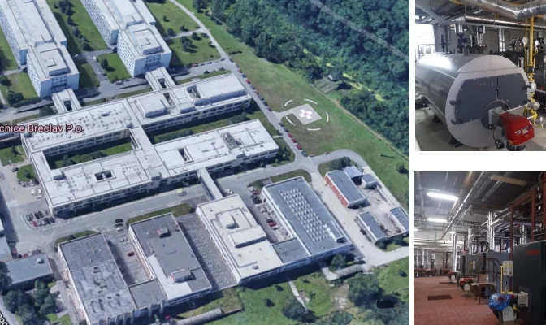
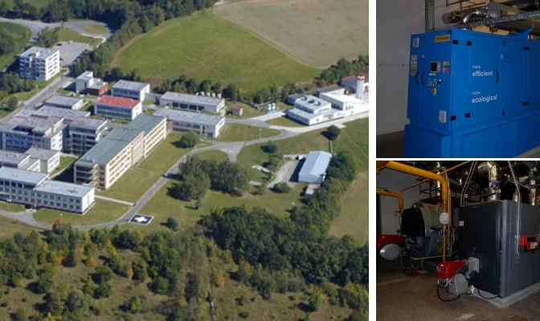
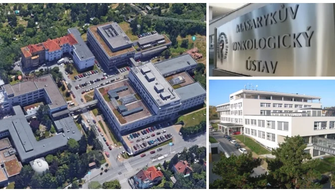

O projektu
Pro Nemocnici Břeclav jsme zpracovali projektovou dokumentaci parní a teplovodní kotelny a zásobování čistou párou vybraných pavilonů.
Rozsah prací
- projektová dokumentace parní kotelny výkonu 2 t páry/hod
- projektová dokumentace teplovodní kotelny 4,7 MW
- zásobování čistou párou pavilonu E (sterilizátory a vlhčení VZT), vlhčení VZT na pavilonu F a vlhčení VZT pavilonu B
Další projekty

Zdravotnictví
Nemocnice Prachatice – kotelny, kogenerace a rozvody
Projektová dokumentace teplovodní a parní kotelny, kogeneračních jednotek, rozvodů a vzduchotechniky pro nemocnici.
Číst projekt
Zdravotnictví
Masarykův onkologický ústav – nová parní kotelna a rozvody
Projektová dokumentace nové plynové parní kotelny, areálových rozvodů, horkovodních předávacích stanic a plynové přípojky.
Číst projekt